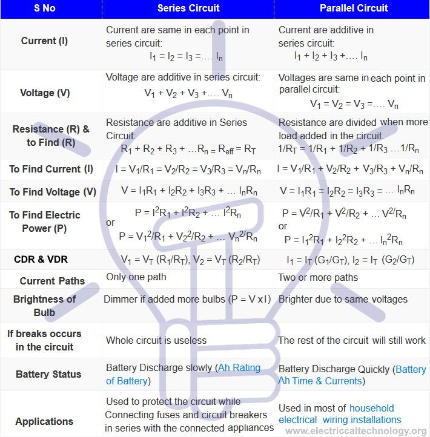
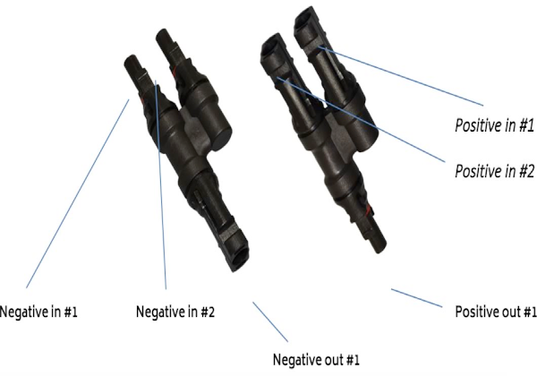
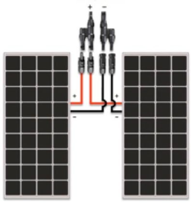
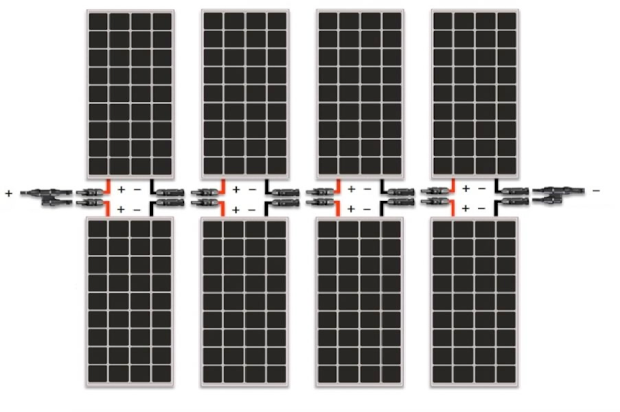

Series, Parallel and Series-Parallel Connection of Batteries
One may think what is the purpose of series, parallel or series-parallel connections of batteries or which is the right configuration to charge storage, battery bank system, off grid system or solar panel installation. Well, It depends on the system requirement i.e. to increase the voltages by series connection of batteries, battery ampere hours (as batteries are rated in Ah instead of Amperes) or simply the current or power of batteries by connecting the batteries in parallel or series-parallel to maintain the system according to your needs. If you need to know how to do it, read the following step by step tutorial about primary (non-rechargeable like AAA cells) and secondary (rechargeable like Lead Acid, Nickel Cadmium, Nickel Metal Hydride, Lithium-Ion etc) batteries configuration.
Types of Battery Connections
There are three basic types of batteries connection.
- Series Connection
- Parallel Connection
- Series-Parallel Connection
Series Connection of Batteries
If we connect the positive (+) terminal of battery to negative (-) and negative to positive terminal as shown in the below figure, then the batteries configuration would be in series.
In below figure, two batteries each of 12V, 200Ah are connected in Series. So the total effective Ampere-hour (Ah) would be same while Voltage is additive.
In series connection of batteries, current is same in each wire or section while voltage is different i.e. voltages are additive e.g.
When We Need & How to Connect Batteries in Series?
When you need to double the voltage level according to your system needs while maintain the same capacity or ampere hour (Ah) rating of batteries.
For example, If you have two 12V, 200Ah hour batteries and you need 24V
system for installation. Simply, connect both of the batteries in series where you will get 24V and the same ampere hour rating i.e. 200Ah. Keep in mind that battery discharge slowly in series connection as compared to parallel
batteries connection. You can do it with any number of batteries i.e. to get 36V, 48V, 72V DC and so on by connecting batteries in series.
This system is used in different solar panel installations and other applications.
Parallel Connection of Batteries
If we connect the positive terminal (+) of battery to positive and negative (-) to negative terminal. Then the batteries configuration would be in parallel.
In parallel connection, voltage will be same in each wire or
section, while current will be different i.e. current is additive. e.g.
In below figure, two batteries each of 12V, 200Ah are connected in parallel. So the total effective Voltage would be same while Ampere-hour is additive. i.e.

When We Need & How to Connect Batteries in Parallel?
When you need to double the battery capacity or ampere hours (Ah) rating according to your system needs while maintain the same level of voltages.
For example, If you have two 12V, 200Ah hour batteries and you need 12V
system for installation. Simply, connect both of the batteries in parallel where the overall battery capacity would be 400Ah and the same voltage level i.e. 12V. Keep in mind that battery discharge quickly in parallel as compared
to series batteries connection.
You can do it with any number of batteries i.e. to get the same level of voltage while increase the battery capacity in ampere hours in parallel batteries connection.
This system is
used in different solar panel installations and other applications.
Series-Parallel Connection of Batteries
If we connect two pairs of two batteries in series and then connect these series connected batteries in parallel, then this configuration of batteries would be called series-parallel connection of batteries.
In other words, It is series, nor parallel circuit, but known as series-parallel circuit. Some of the components are in series and other are in parallel or complex circuit of series and parallel connected devices and batteries.
In below figure,.
Six (6) batteries each of 12V, 200Ah are connected in Series-Parallel configuration. i.e.
- B1 and B2 in series ... 12V + 12V = 24V, @200Ah ... Series Connection
- B3 and B4 in series ... 12V + 12V = 24V, @200Ah ... Series Connection
- B5 and B6 in series ... 12V + 12V = 24V, @200Ah ... Series Connection
And then the pair of these batteries are connected in parallel i.e. two parallel sets of three batteries are connected in series. i.e.
Set 1 = B1, B3, B5 = Series
Set 2 = B2, B4, B6 = Series
And then,
Set 1 & Set 2 = In Parallel.
So the effective voltage and Ampere-hour would be
Voltages = 12V + 12V = 24V. (Parallel connection)
When We Need & How to Connect Batteries in Series-Parallel?
When you need to double the battery capacity or ampere hours (Ah) rating as well as batteries voltages according to your system needs.
For example, If you have six batteries each of 12V, 200Ah hour and you need 600Ah capacity
and 24V system for installation. Now you have two sets of three batteries, simply, connect two sets of three batteries in series and then connect the two set in parallel (as shown in fig above) where the overall battery capacity
would be 600Ah and level of voltages would be 24V.
You can do it with any number of batteries i.e. to get different level of voltages as well as increase the battery capacity in ampere hours in series-parallel connection
of batteries.
This system is used in different solar panel installations and other applications.
Comparison of Series, Parallel & Series-Parallel Connection
The given table below would show the main different between series and parallel connection.
General Precautions & Instructions of Batteries Wiring & Installation
Warning & Instructions:
- Never ever short or touch the Positive (+) terminal of battery with Negative (-) terminal of battery to avoid short circuit, damage, injury, explosion or fire.
- Always connect the same voltage level and capacity of battery to avoid charging problems and shortened battery life.
- Don’t confuse (as it may be dangerous) with the complex wiring and connection of batteries in series-parallel. Always, do proper calculations and make schematic and diagrams of battery bank connections before implementing them in practical to be safe.
- Special care should be taken of polarity while charging the secondary batteries to avoid short circuit and hazardous condition.
- When battery gets fully charged, remove the charger to avoid overheating (In case of non automatic charger or charge controller).
- Always, charge battery at room temperature.
- Do not try to charge the primary cells. i.e. don’t charge the non-rechargeable batteries.
- Disconnect the battery from connected load if no longer in use to avoid corrosion and leakage.
- Disconnect the battery charging source and load before connecting or disconnecting terminals.
Series, Parallel and Series-Parallel Connection of Solar Panels
Why Parallel?
Strictly parallel connections are mostly utilized in smaller, more basic systems, and usually with PWM Controllers, although they are exceptions. Connecting your panels in parallel will increase the amps and keep the voltage the same. This is often used in 12V systems with multiple panels as wiring 12V panels in parallel allows you to keep your charging capabilities 12V.
The downside to parallel systems is that high amperage is difficult to travel long distances without using very thick wires. Systems as high as 1000 Watts might end up outputting over 50 amps which is very difficult to transfer, especially in the systems were your panels are more than 10 feet from your controller, in which case you would have to go to 4 AWG or thicker which can be expensive in long run. Also, paralleling systems require extra equipment such as branch connectors or combiner box.
Why Series?
Strictly series connections are mostly utilized in smaller systems with a MPPT Controller. Connecting your panels in series will increase the voltage level and keep the amperage the same. The reason why series connections are utilized with MPPT controllers is that MPPT Controllers actually are able to accept a higher voltage input, and still be able to charge your 12V or more batteries. The benefit of series is that it is easy to transfer over long distances. For example you can have 4 100 Watt panels in series, run it 100 feet and only use a thin 14 gauge wire.
The downside to series systems is shading problems. When panels are wired in series, they all in a sense depend on each other. If one panel is shaded it will affect the whole string. This will not happen in a parallel connection.
Why Series-Parallel
Solar Panel arrays are usually limited by one factor, the charge controller. Charge controllers are only designed to accept a certain amount of amperage and voltage. Often times for larger systems, in order to stay within those parameters of amperage and voltage, we have to be creative and utilize a series parallel connection.
For this connection, a string is created by 2 or more panels in series. Then, an equal string needs to be created and paralleled. 4 panels in series needs to be parallel with another 4 panels in series or there will be some serious power loss. You can see more in the example below.
There isn’t really a downside to series-parallel connections. They are usually used when needed and other options are not available.
Setting up Your System in Parallel
A Parallel connection is accomplished by joining the positives of two panels together, as well as the negatives of each panel together. This can be accomplished by different means, but usually for smaller systems this will be utilized via branch connector. The branch connector has a Y shape, and one has two inputs for positive, which changes to one, along with two inputs for negative, which changes for one. Please see picture below.
As you can see you have a slot for the negative terminal of panel #1 and the negative terminal of panel #2. As well as the positive equivalents. Then the negative out and the positive out will be utilized to connect to your charge controller via a solar PV cable. See the picture below.
Let’s look at a numerical example. Say you have 2 x 100 Watt solar panels and a 12V battery bank. Since each panel is 12V and the battery bank you want to charge is 12V, then you need to parallel your system to keep the voltage the same. The operating voltage is 18.9V and the operating current is 5.29 amps. Paralleling the system would keep the voltage the same and increase the amps by the number of panels paralleled. In this case you have 5.29 Amps x 2 = 10.58 Amps. Voltage stays at 18.9 Volts. To check math you can do 10.58 amps x 18.9 volts = 199.96 Watts, or pretty much 200 Watts.
*If you want to check math it won’t work with the open circuit voltage. You can use the operating voltage, so 18.9 volts x 2 = 37.8 volts. 37.8 volts x 5.29 amps = 199.96 Watts, or pretty much 200 Watts.Setting up Your System in Series-Parallel
A series-parallel connection is accomplished by using both a series and a parallel connection. Every time you group panels together in series, whether is 2, 4, 10, 100, etc. this is called a string. When doing a series-parallel connection, you are essentially paralleling 2 or more equal strings together. See diagram below
As you can see this series parallel connection has 2 strings of 4 panels. The strings are paralleled together. Let’s look at a numerical example for this diagram. Using a 40 Amp MPPT Controller that can accept up to 800 Watts of power, but only can accept 100 Volts in, which is why you cannot do everything in series. Paralleling 8 panels as well would cause too high of an amperage.
For this example, you would use the open circuit voltage of 22.5 Volts and the operating current of 5.29 Amps. Creating a string of 4 panels, you will have a voltage of 22.5 Volts x 4 = 90 volts, which is under the 100 Volt limit. Then by paralleling on the other string, the voltage will stay 90 volts and the amps will double, so 5.29 amps x 2 = 10.58 Amps.
* Keep in mind there is usually another factor that needs to be taken into account when sizing for the MPPT Controller called the boost current.*If you want to check math it won’t work with the open circuit voltage. You can use the operating voltage, so 18.9 volts x 4 = 75.6 volts. 75.6 Volts x 10.58 amps = 799.85 Watts, or pretty much 800 Watts.